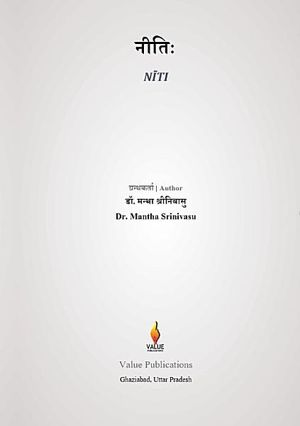

Nīti
नीतिः
Google PlayLibraryEducational administration in India is practised every day, yet it is taught without a theory of its own. Nīti builds one from the Indian traditions of daṇḍanīti, the science of governance, and places it in disciplined comparison with modern administration and organisation theory.
Drawing on the Arthaśāstra, Dharmaśāstra, Buddhist monastic law, inscriptions and the records of the great monastic universities, the book's twenty-six chapters examine the seven constituents of a polity (saptāṅga) as a model of an institution; capability and accomplishment (śakti and siddhi); site, buildings and space; endowment and finance (kośa); the law of self-governing bodies (śreṇī-dharma); deliberation, counsel and confidentiality (mantra); governance by assembly (saṅghakamma); procedure, evidence and grievance (vyavahāra); and the drafting of orders (śāsana). Further chapters cover the qualities of an officer, salaries and grades, the superintendent and the departmental system, an officer's own conduct, integrity testing, records and audit, the forty ways of embezzlement, the ranking of failures, and an institution's external posture (ṣāḍguṇya).
After a structured review of Western administration and organisation theory and a comparative verdict, the book sets out an Indian theory of educational administration. Written in English, with a glossary, an index of primary texts and inscriptions, a bibliography and an index, it is essential reading for university and school administrators, policy-makers and students of educational management.
Keywords: educational administration, educational management, governance, Arthashastra, dandaniti, Kautilya, Nalanda, audit, accountability, higher education, Indian Knowledge Systems, IKS, NEP 2020